第13回課題
2D/3Dツールを使って何かをデザインする。
2D:Inkscape
- Inkscapeホーム
- Inkscapeは2Dベクターデータの編集ソフトで、無料でダウンロード・利用ができる。
- 静止画だけでなく、動画の作成も選択できる。
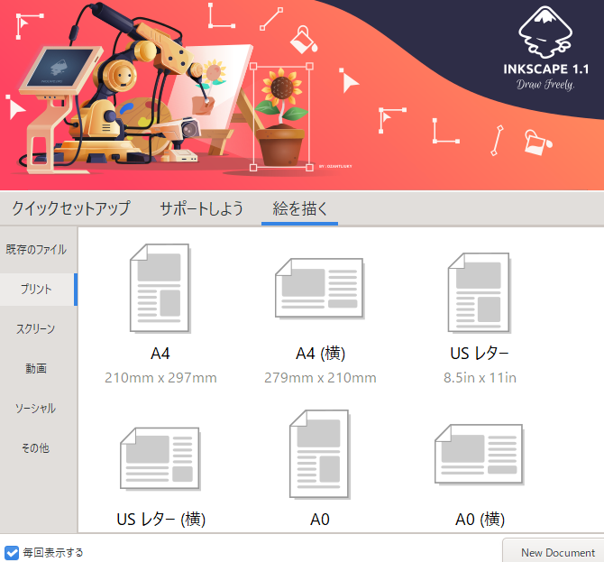
- 今回はA4サイズで2Dの描写を試してみる。デフォルトの編集画面では上部にメニューバー、左側にツールメニューが設置されている。図形描写を選択し、四角形を描写した。
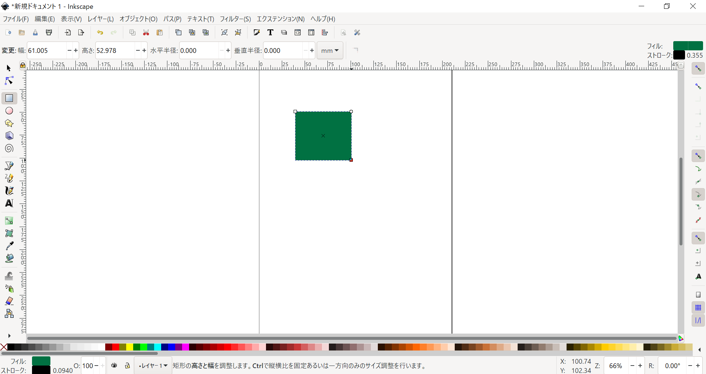
- オブジェクトを選択した状態で右下のカラーアイコンをクリックすると、フィルとストロークの設定画面を開くことができる。透明度、色、枠線の太さなどを変更できる。
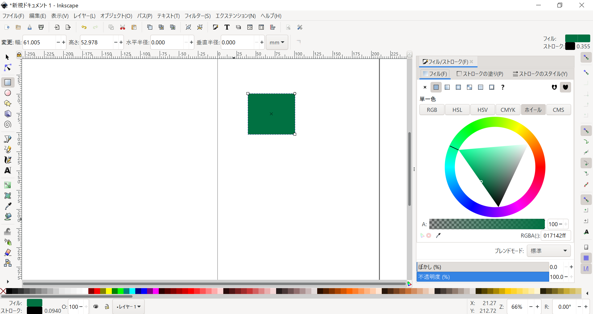
 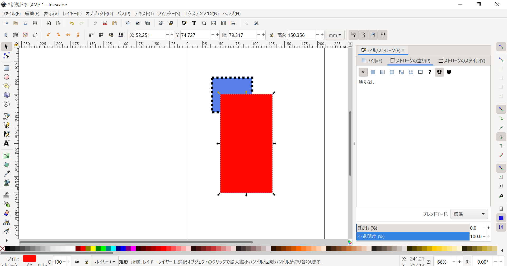
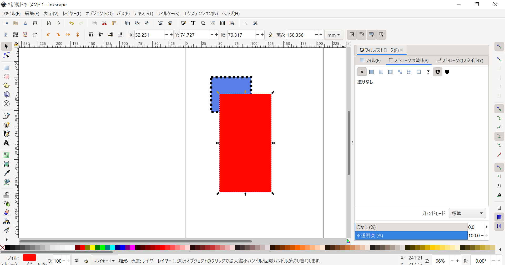
- ノードツールでは、オブジェクトの形をベジェ曲線で編集することができる。
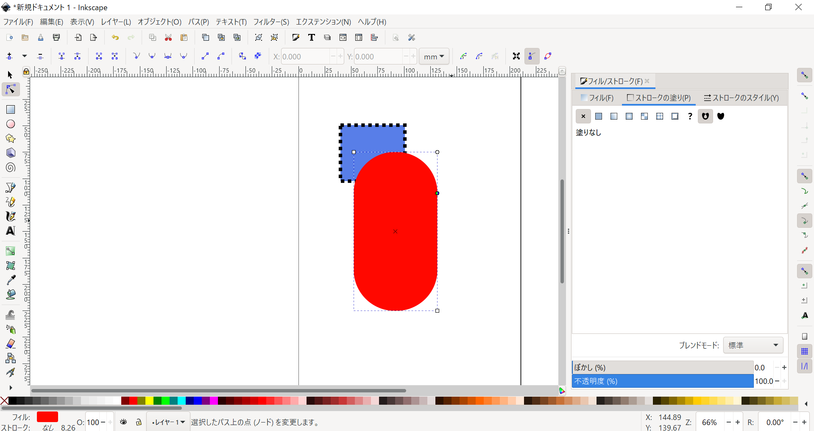
- ベジェ曲線を使った図形描写も可能。
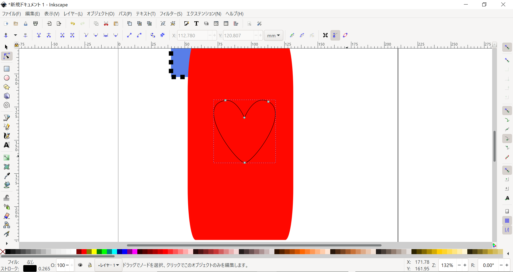
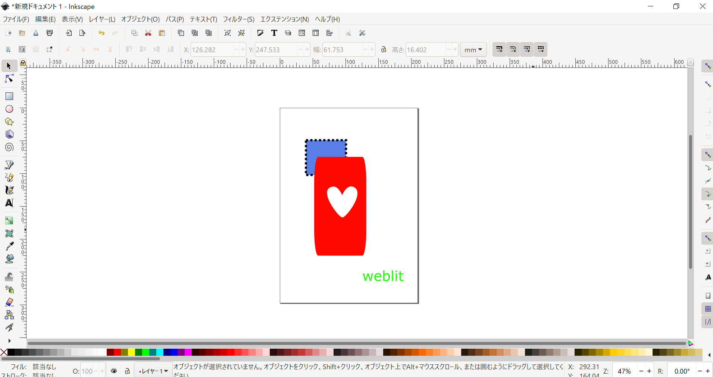
- エクスポートはPNGに設定されているが、ソフトにはSVGとして保存される。
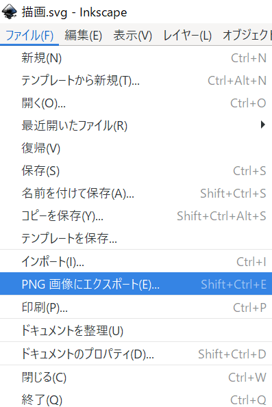
3D:Blender
- Blenderホーム
- Blenderは無料でダウンロード・利用できる3Dモデル編集ソフトである。
- デフォルトの編集画面は以下のようになっている。[Alt]+ドラッグで視点の角度調節、[Shift]+[Alt]+ドラッグで視点の平行移動を行う。
- 操作モードを変更することで左側のツールメニューが変わる。オブジェクトモードではオブジェクト単位での操作、エディットモードでは各点、辺、面単位の操作を行う。[Tab]キーで2つのモードを切り替えることができる。
- 右上にはレイヤーの一覧、右下にはオブジェクトの詳細設定が設置されている。
- Blenderはショートカットキーで操作すると効率的である。
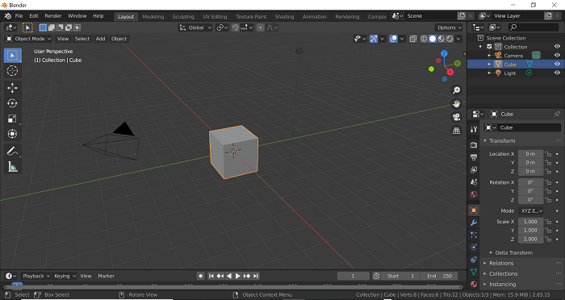
- デフォルトで設置されているキューブのレイヤーをオブジェクトモードで編集していく。
- キューブを選択した状態で、[S]+カーソル移動で同比率で拡大・縮小できる。[S]+数値でも指定可能。
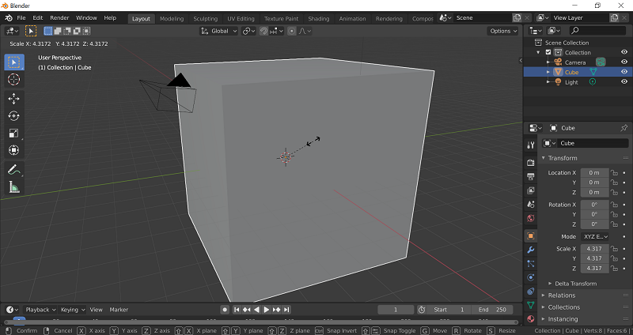
- [S]+軸(Z)+カーソル移動or数値で特定の方向のみの操作もできる。
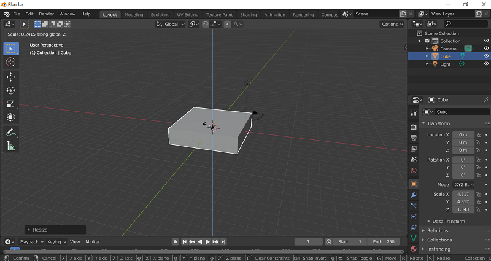
- エディットモードに切り替え、より詳細な操作をしていく。
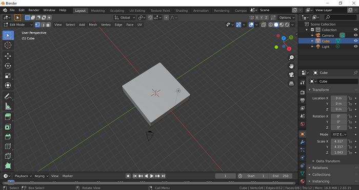
- [Ctrl]+[R]でループカットができる。ループカットとは、オブジェクトの特定の部分に新たに点と辺を追加する操作である。

- 操作モード表示の隣の選択要素の指定で辺を選択し、特定の辺を操作していく。[G]+カーソル移動or数値で選択した部分の移動ができる。

- 同様に面を指定し、[E]+カーソル移動or数値で押し出しをしてみる。
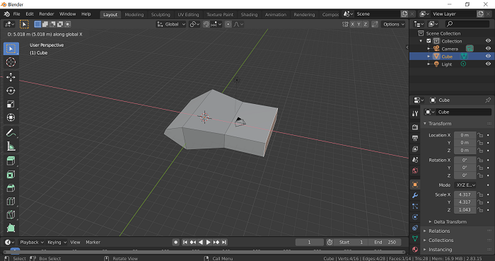
- オブジェクトモードに戻し、"add"ボタンから新たにオブジェクトレイヤーを追加する。
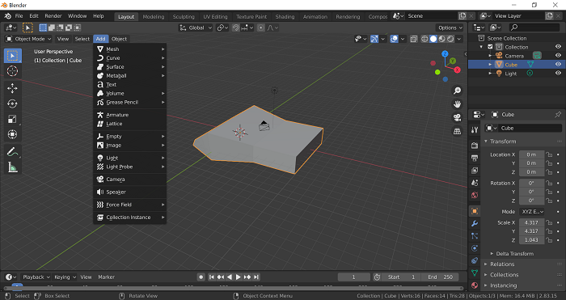
- シリンダーの大きさと位置の変更をする。
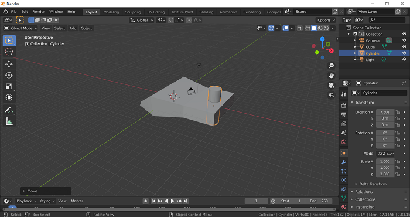
- キューブを選択した状態で、右側の詳細設定のうちスパナアイコンを選択し、"Add Modifier"から"Boolean"をクリックする。
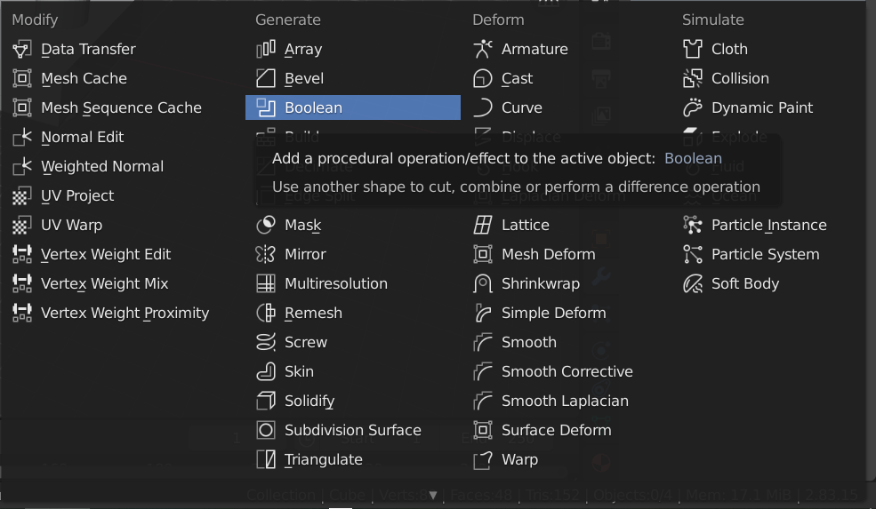
- Boolean設定で"Operation"をDifference、"Object"をシリンダーにして、Applyをクリックする。
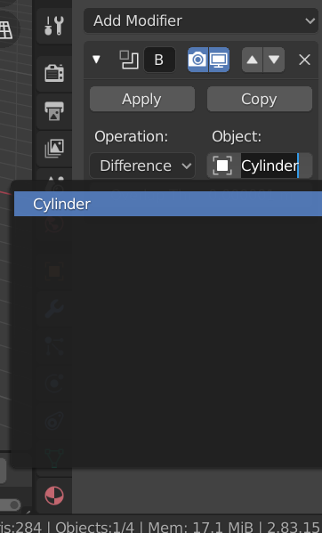
- シリンダーレイヤを削除すると、キューブと重なっていた部分がくりぬかれている。
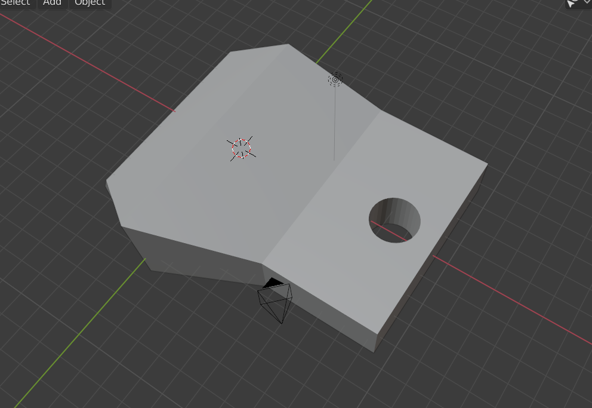
- 次にオブジェクトの色を指定していく。右側の詳細設定のボールアイコンを選択し、マテリアルのベースカラーを変更する。
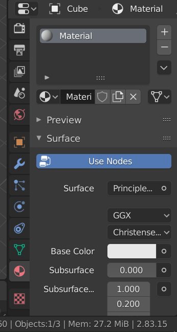
- 今回はバグで正しい色に表示されなかったが、glb形式などで出力さるとこの色が反映されている。
- オブジェクトを右クリックし、"Shade Smooth"を選択すると表万を滑らかにすることができる。
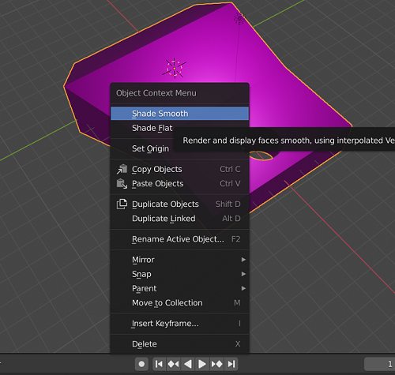
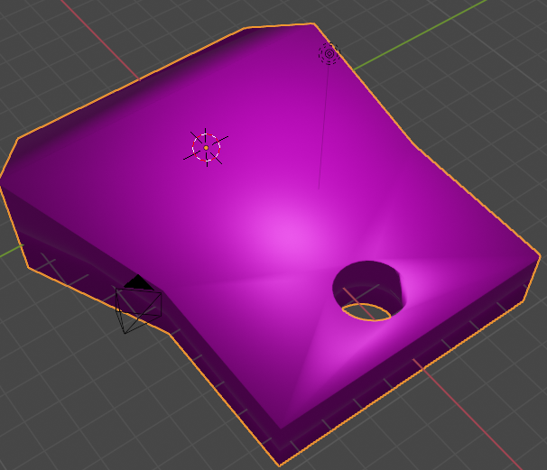
- エクスポートは、STL、GLB、OBJなどの形式が選択できる。
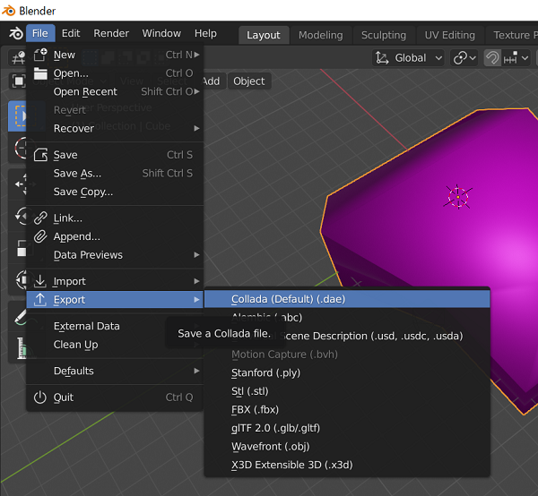
 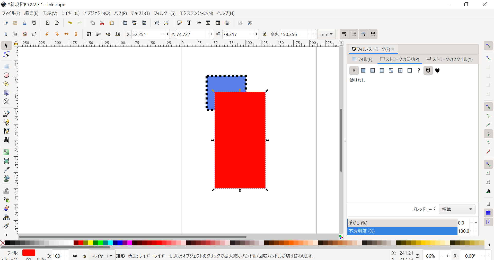
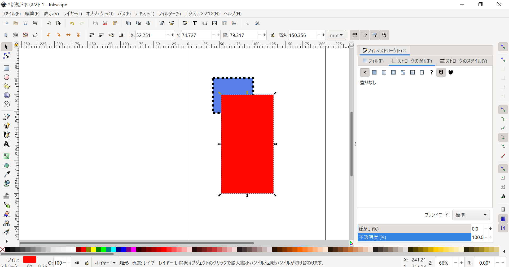